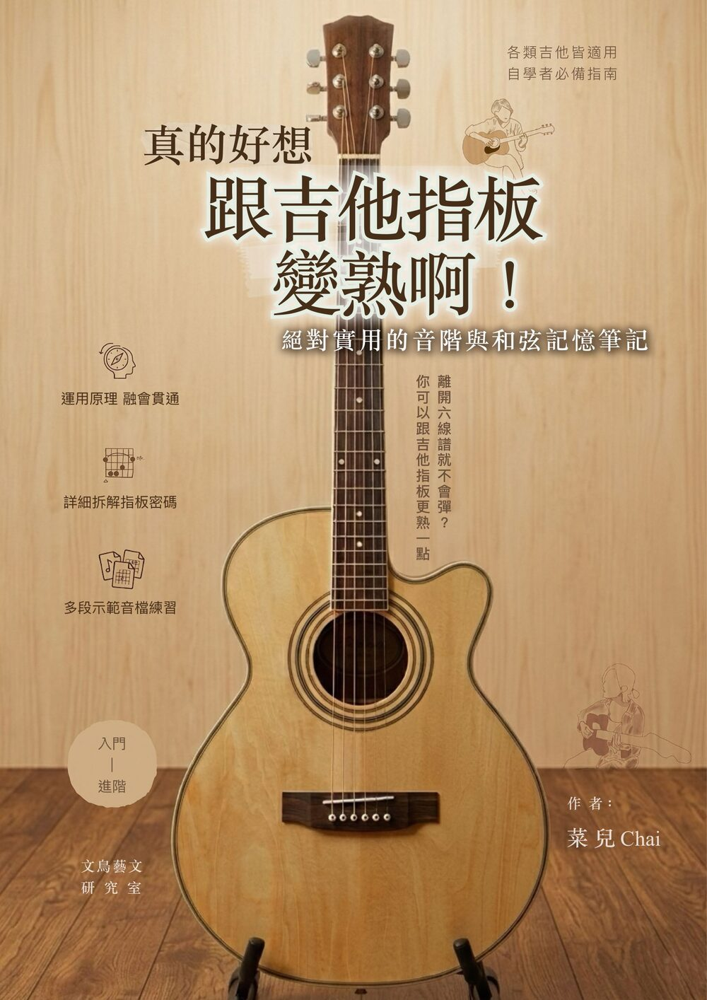
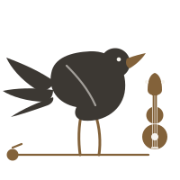
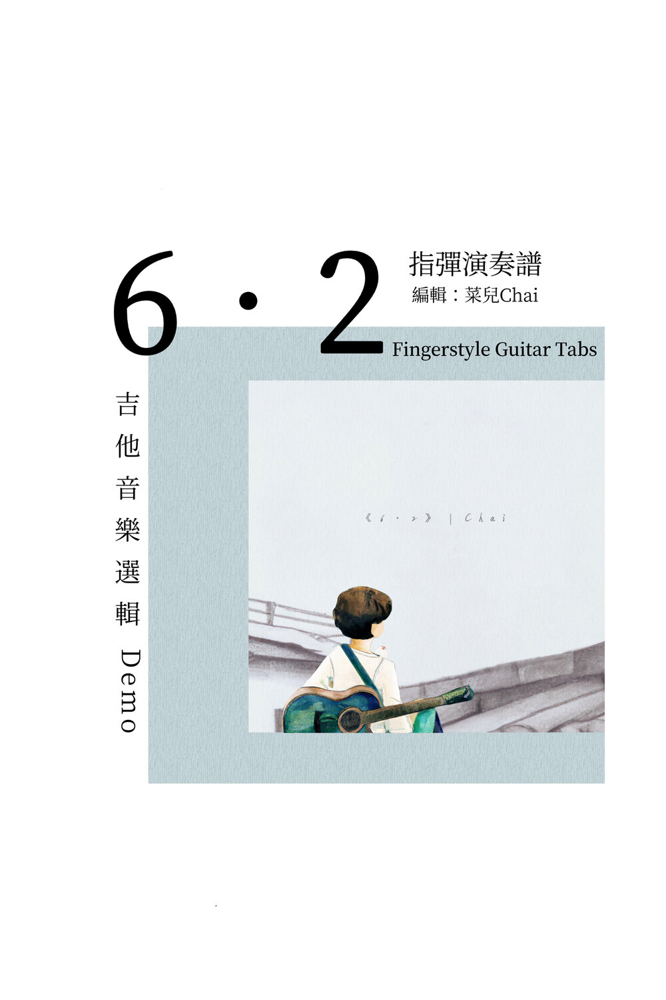

電子書 · PDF
Catalogue
曲譜／電子書
皆為 PDF 數位檔案。點選「購買」會前往結帳頁面，完成付款後，下載連結將寄至您的信箱。

曲譜 · PDFAbout
關於 文鳥藝文研究室
專門獨立製作與出版音樂創作者菜兒Chai的吉他創作譜與教學書籍等。
菜兒Chai早年開始創作時，身邊總是有一隻白文鳥，陪伴超過十年的光陰，
因此以「文鳥藝文研究室」命名，紀念那段時光。
關於 菜兒Chai
學經歷
國立臺灣大學戲劇研究所畢業。
現為獨立音樂創作者，吉他講師資歷逾10年。
2022.4 - 2026.6 年為華研國際音樂簽約作曲者。
專長
吉他彈唱、指彈演奏、詞曲創作、音樂製作與設計、吉他教學。
自2013年，對外發表個人音樂創作。
自2019年，獨立發行音樂創作作品，並常年與環境導覽劇場合作，為不同地方寫歌。
入圍與獲獎經歷
入選第一屆吉他烏托邦網路指彈大賽前十強總決賽。
〈川・樂1930〉民謠改編大賽，以改編鄧雨賢〈雨夜花〉獲第一名獎項。
入選民歌四十創作大賽總決賽。
17屆華研全球網路流行音樂創作大賽作曲組佳作。
書籍出版
《6・2》吉他演奏電子譜（2024）
FAQ
常見問題
付款完成後，系統會立即將下載連結寄送至您填寫的 Email，請留意垃圾信件匣。
目前支援信用卡與 Apple Pay，結帳頁面由第三方平台提供，交易安全有保障。
數位檔案購買後原則上不接受退款；若檔案損毀或有誤，歡迎來信告訴我。
購買的檔案供個人練習使用，公開演出或重製前，請先寫信詢問版權事宜。